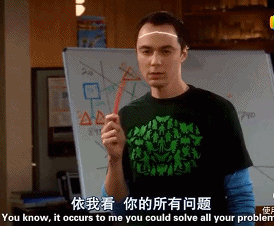
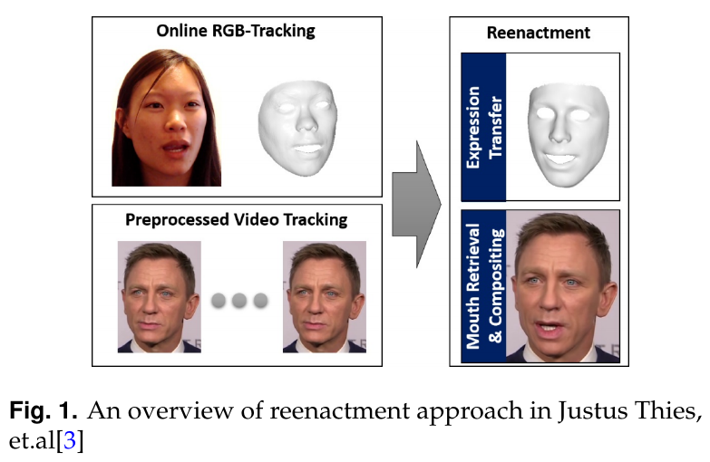
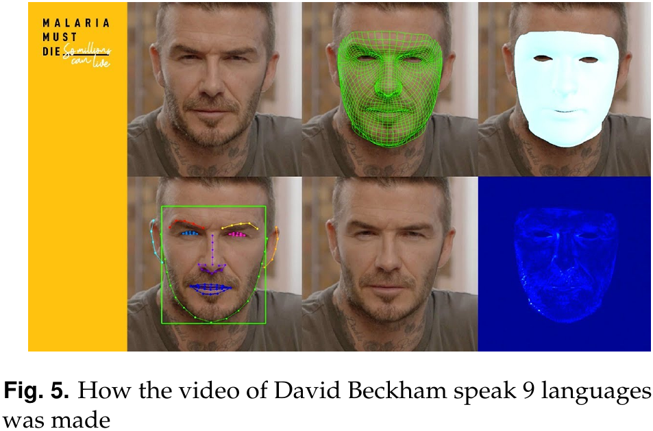

layout: true class: animated, fadeIn, faster, typo, typo-selection --- class: center, middle .north.height-40.center[ ## Legal & Ethical Concern about $\textit{Deep Fake}$ —— When seeing is no longer believing <hr /> ] **$\textbf{Team: ALG(AI Leads to Greatness)}$** .abs-layout.top-55.left-18[ **[Weikang Li](https://www.weikang.li)**<br> <small>**$\textsf{181220031}$**</small> ] .abs-layout.top-55.left-42[ **[Hao Ding]()**<br> <small>**$\textsf{181220010}$**</small> ] .abs-layout.top-55.left-66[ **[Jingjia He]()**<br> <small>**$\textsf{181220020}$**</small> ] --- ## Intro <hr> .float-right[  ] #### Looks interesting, right? #### A number of legal, social and ethical questions follows... <br> -- * Is a legal intervention necessary? * Should deep fakes be banned completely * Should any obligations be imposed on platform operators? * Who to control? * And ...... --- ## Emergence and History <hr> .float-right.width-40[  ] <br> First work to address what was later known as deepfake is a paper by [Justus Thies et.al](), which was presented at CVPR in 2016. <br> <hr> + <mark>created a way for 'source' to control the facial expressions of 'target' in a video by re-rendering the target video in a photo-realistic way.</mark> --- ## Emergence and History <hr> #### As for the term "Deep Fake" ... + Literally originated from a reddit user 'deepfakes'. + In January 2018, another redditor created the FakeApp to make this technology easily accessible for everyone. <br> #### Basic ideas [Generative Adversarial Networks (GANs)]() or [Autoencoders (AEs)](). --- ## Deep Fake: Four Cases <hr> #### Malicious use of deep Fake The very first use case of deep fake was to create celebrity deep fakes. + with popularity of deepfake, it has become a huge hidden danger. + new form of <mark>privacy invasion</mark>: it facilitates identity development, intimacy and equality. + a significant part of the online community is rather <mark>indifferent</mark> to this phenomenon. --- ## Deep Fake: Four Cases <hr> #### Social use of deep Fake <!--.float-right.width-45[ <img src="static/Fig_4.png" width="600"/> ]--> <center><video width="85%" height="360" controls> <source src="../../images/slides/Obama.mp4" type="video/mp4"> </video></center> --- ## Deep Fake: Four Cases <hr> ##### Deep fakes in commercial area .float-right.width-40[  ] + The creation of video content will become cheaper + Will undoubtedly facilitate a wave of new business models + Also facilitate new forms of communication. ##### Creative use of deep fake + Deep fakes could be regarded as <mark>a medium that facilitates creative interactions.</mark> + Creative deep fakes could be considered <mark>a constitutive part of free speech.</mark> --- ## Ethical Analysis <hr> ##### Utilitarianism and Virtue <mark>In the view of utilitarianism:</mark> + If the purpose is to create meaningful and fun artworks, then it is absolutely ethical. + However, if deep fakes is used to create fake news and cause misbeliefs across the society, the overall evaluation will be negative. <mark>When it comes to Virtue Ethic:</mark> + if the creation to entertain the public is at the cost of damaging somebodies reputation or image, it can still hardly be considered ethical. --- ## Ethical Analysis <hr> ##### Code of Professional Ethics + Considering humanbeing as the end instead of method at anytime + Contirbute to social well being from a general perspective + Follow the copyright laws and tort laws. ##### Undermine Trust When trust is eroded, it is easier to raise doubts about specific events. <br> > Can mimic biometric data, and can potentially trick systems that rely on face, voice, vein or gait recognition Good news! There are also many works to detect deep fake from videos:<br> see [David Guera et.al 2018]() --- ## Ethical Analysis <hr> ##### Privacy and Transparency + Almost every use of deep fakes <mark>is not following</mark> a prior consent by the information owner + Most of them <mark>is actually violating</mark> portrait right law or some other laws if made commercial Our suggestion:<br> Add "watermark" to deep faked creations automatically and compulsorily by the application it provided, which makes audience aware that this is not the reality. --- ## Conclusion and Remarks <hr> + The fate of deep fakes will depend on how well liberal democracies are able to <mark>combine technological, social political and regulatory approaches</mark> to address the challenges that they present. + Deep fakes could also have socially beneficial outcomes <mark>by reducing transaction costs</mark> in creating derivative content as well as by facilitating new forms of creativity. + regulators' lack of necessary technical expertise and resources seems to suggest that such regulatory responses alone will not suffice. As a result of these shortcomings, <mark>economic and legal incentives for market-driven solutions should be encouraged.</mark>